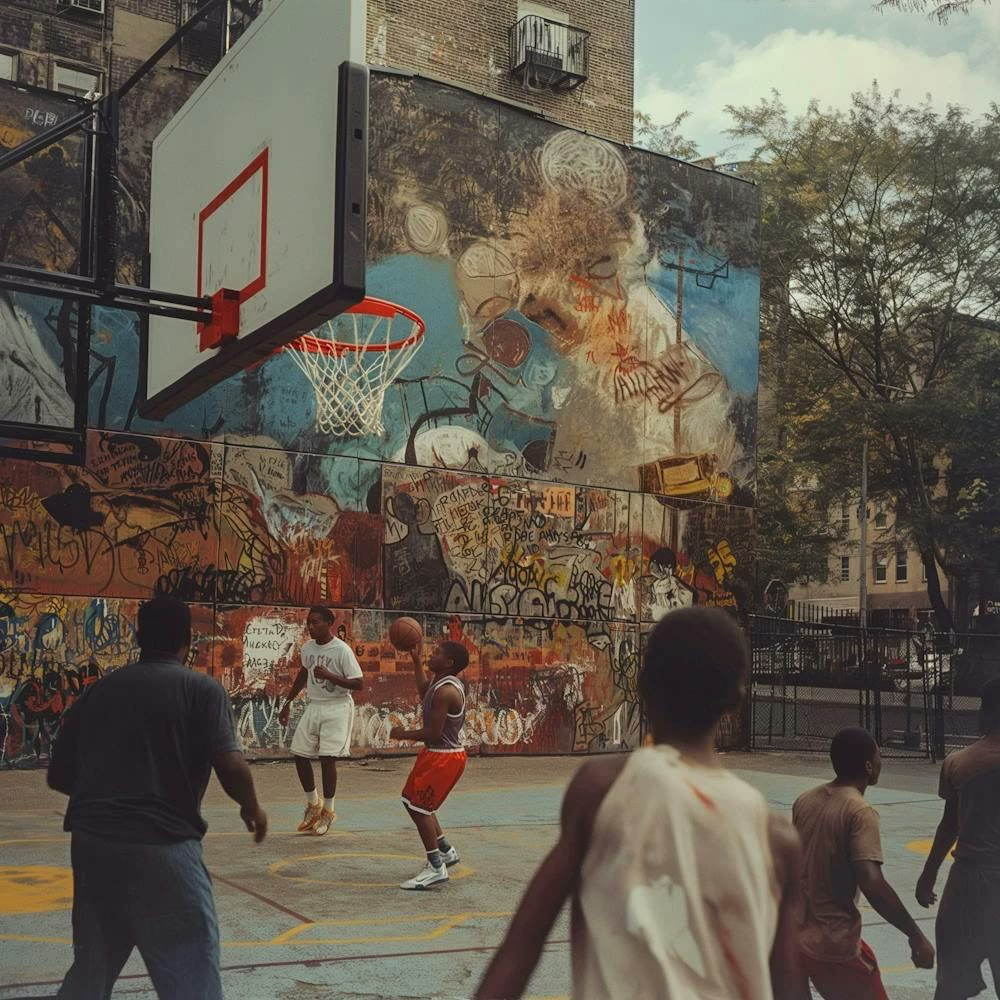

It started on the court.

For years I rolled my shorts at practice. Every water break, every drill, the same fold at the waistband, because nothing made for girls like me fit the way I wanted to play.
Then one morning on a run, a girl passed me and said, "I love your shirt." It was a student ministry shirt. That one line stuck. What we wear says something before we ever open our mouths.
I turned down playing college basketball in New York City to come to ACU. I kept thinking about the girls still rolling their shorts. MAE. is for them: modest athletic wear for girls who hoop, run, and lift, made with a why.
Play with purpose.
Pursue with purpose.